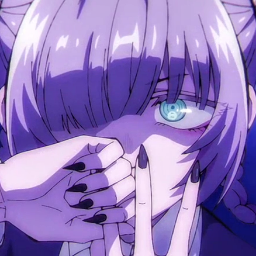

BotAn Hub
Open-source documentation, tactical game mechanics analysis, spreadsheet data automation, and professional video game localization.
Tactical Research & Database Systems

Brown Dust II: Tactical Compendium
- Step-by-step beginner progression roadmaps and banner pull recommendations
- Mathematical descriptions of mechanics (Damage, Territory System, Rapport)
- Interactive web tools for Fiend Hunter, Territory, and Rapport Systems

Brown Dust II Spreadsheets
Spreadsheet-driven databases for Brown Dust II reverse-engineering and event analytics.
- Game Lore Archives & Dialogue Transcripts
- Fishing Mechanics & Drop Rates
- In-Game Shop & P2W Package Efficiency Calculations
- Tower of Salvation Artifact & Encounter Logs
- Player Achievement Tracking & Milestone Progress
Information Design & Infographics Archive
A curated archive of high-density visual guides, resource valuation charts, and competitive theorycrafting matrices designed for gaming communities.
 Brown Dust II · Visual Timeline
Brown Dust II · Visual Timeline
Multi-Track Update Roadmap
An information architecture concept synthesizing simultaneous costume banners, shop currency rollover dates, event packs, and client patch notes into a synchronized monthly timeline.
 Brown Dust II · Economic Hierarchy
Brown Dust II · Economic Hierarchy
Event Currency Valuation Matrix
A visual decision guide mapping in-game event stores by stamina-to-yield efficiency. Organizes high-impact materials, account progression bottlenecks, and low-efficiency currency traps.
 Girls X Battle 2 · Competitive Matrix (Legacy)
Girls X Battle 2 · Competitive Matrix (Legacy)
Endgame Synergy & Build Reference
Legacy competitive theorycrafting graphic mapping multi-character team synergies, counter-pick matchups, and optimal stat builds (antiques, crystals, potentials) across high-tier PvP play.
Video Game Localization & Translation
Outcore: Desktop Adventure
A desktop-interactive puzzle adventure featuring fourth-wall-breaking humor and narrative puzzles. Collaborated on full dialogue localization alongside the PrismaLoc team.
Miss Perfect Miss Ending
An anime-style narrative puzzle game with psychological mystery elements. Full translation covering 24 distinct storyline branches, character voiceover scripts, and environmental puzzles.
Exponential Idle
A math-inspired incremental strategy game centered on differential equations, exponential scaling models, and variable optimization. Localized game interfaces, upgrades, and mathematical guides.
About the Author

I'm a Ukrainian physicist and technical researcher working across mathematical simulation, data extraction, and interactive web tools. I actively produce open-source documentation, character spreadsheets, and community translations.
Interested in game localization, mathematical modeling, or custom data tooling? Reach out directly: